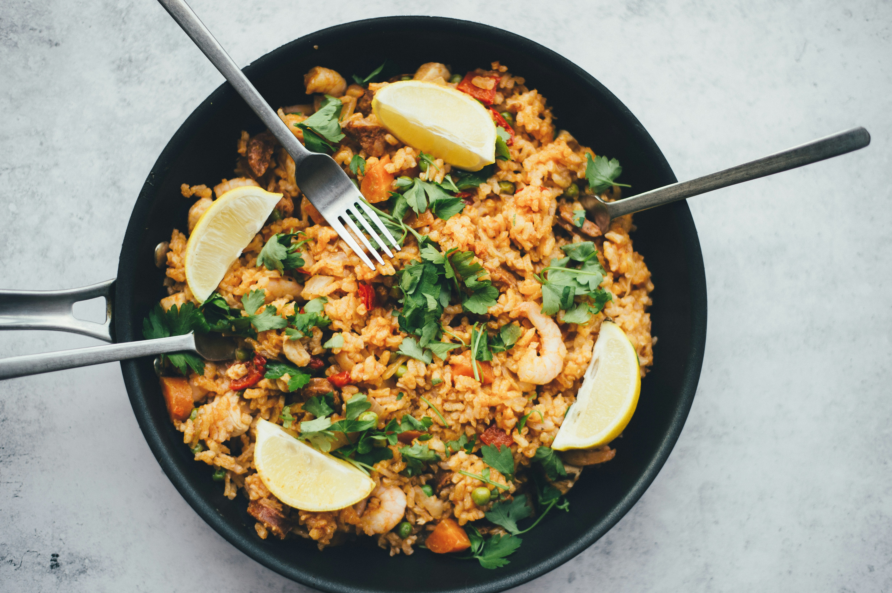

Fried rice is the ultimate leftover food. Not only is it totally customizable with whatever additional protein and veggies you have in the fridge, but it’s crazy simple to make too. I know that everyone has a soft spot in their heart for their favorite type of fried rice, so this recipe is as classic as you can get, perfect for personalizing however you like. I may be biased, but this fried rice is truly unbeatable—after 6 iterations, it’s my perfect, best-ever recipe.
©SD-CODE-UDN 2024